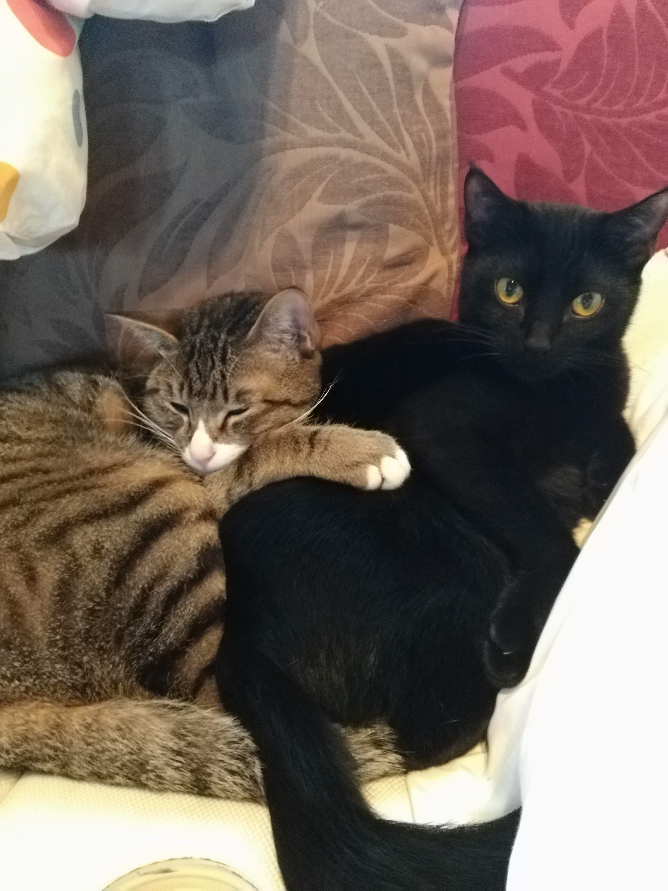
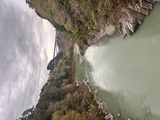

Welcome to my page
Karin's Portfolio.
経済学部の大学生です。
「学び」×「テック」で日常を便利にするアプリを作っています。
犬と猫が好き。

Welcome to my page
経済学部の大学生です。
「学び」×「テック」で日常を便利にするアプリを作っています。
犬と猫が好き。
忘却曲線に基づいて、最適な復習タイミングを教えてくれるアプリ。SM-2アルゴリズム実装。
大学から駅までのバス時刻表アプリ。「今出れば間に合うか」を信号機の色（青・黄・赤）で直感的に判定します。
Firebase Realtime Databaseを使ったリアルタイムチャットアプリ。部署ごとのルームでメッセージがリアルタイムに全員へ共有される。
ポモドーロテクニックを使った、かわいいデザインの作業用タイマー。
訪れた素敵な場所と、私の率直な感想メモ。
入園無料なので小さめだが、動物との距離が近い！！あんなに近くでカピバラを見たのは初めてだった！
ソースカツ丼がボリュームがあっておいしかった！

かなり歩いた！途中の橋が怖かったので駆け抜けた。景色がすごく良かった